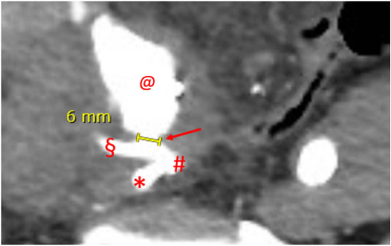
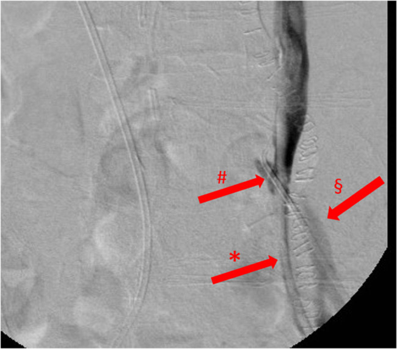
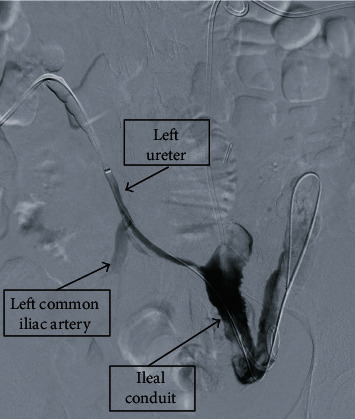

1670 — Rò động mạch chậu – niệu quản sau xạ trị và sau đặt stent: “chảy máu cảnh báo” rồi sốc mất máu / Uretero-iliac artery fistula (UAF)
Tags: pattern:ro-dong-mach-nieu-quan pattern:chay-mau pattern:khuyet-thuoc-long-mach vung:nieu-quan vung:chau vung:dong-mach-chau protocol:CTA protocol:DSA protocol:chup-nguoc-dong
Mức chắc chắn (certainty): tổng hợp y văn (literature synthesis) — ghép 1 tổng quan + 2 ca có ảnh (Open Med 2022, PMC9746699, CC BY 4.0), 1 tổng quan + ca (Radiology Case Reports 2024, PMC11866053, CC BY-NC-ND 4.0), 2 ca (Case Rep Urol 2021, PMC8371582, CC BY), 1 loạt ca phức tạp + tổng quan (Diagnostics 2022, PMC9406295, CC BY 4.0), 2 ca (BMC Urol 2022, PMC9330645, CC BY 4.0) và 1 ca can thiệp nội mạch (J Vasc Surg Cases 2022, PMC8783110, CC BY-NC-ND 4.0). Không có thử nghiệm ngẫu nhiên về chẩn đoán/điều trị UAF → các con số là tổng quan đoàn hệ và ca, không phải khuyến cáo hạng A.
Câu chốt: UAF là lỗ rò giữa niệu quản đã xơ – thiếu máu (do xạ, mổ, stent lâu ngày) và động mạch chậu đập ngay cạnh, nên bệnh cảnh kinh điển là đái máu ồ ạt từng đợt, có “chảy máu cảnh báo” trước đó, rồi sốc mất máu. Chẩn đoán không được loại trừ bằng CT không cản quang hay CT có cản quang âm tính: độ nhạy CT chỉ 27–55%, chụp mạch 45–72%, và trung bình phải làm 2,4 lần chụp mới chẩn đoán được. Điều trị đầu tay hiện nay là stent-graft nội mạch ± nút mạch, kèm rút stent niệu quản và đặt nephrostomy để cắt vòng xoắn cơ học – viêm.
1. Tổng quan bệnh học – cơ chế hình ảnh
1.1 Vì sao niệu quản lại rò vào động mạch chậu
- Giải phẫu: niệu quản bắt chéo động mạch chậu gốc (common iliac) ở eo chậu; bên trái bắt chéo ĐM chậu gốc trái, bên phải thường bắt chéo ngã ba ĐM chậu gốc – ĐM chậu ngoài. Đây là nơi thành niệu quản mỏng nhất, sát động mạch nhất, ít mô đệm nhất → là vị trí rò hay gặp nhất, đặc biệt ĐM chậu gốc trái (PMC9406295).
- Chuỗi bệnh sinh: xạ trị tiểu khung + mổ lớn + stent niệu quản lâu ngày → viêm mạn, xơ hóa, thiếu máu thành niệu quản → niêm mạc teo, thành mỏng dính vào mô xơ quanh niệu quản; động mạch chậu đập theo nhịp tiếp tục mài mòn thành đã hỏng (yếu tố cơ học) → loét xuyên thành → lỗ rò. Nhiễm khuẩn niệu tái diễn làm tăng viêm và phá hủy thêm (PMC9746699).
- Vì sao chảy máu từng đợt: lỗ rò nhỏ bị cục máu đông bịt tạm → đái máu ngắt quãng; khi cục máu trôi hoặc lỗ rò mở rộng → chảy máu ồ ạt, sốc. Đây là lý do “chảy máu cảnh báo” (sentinel/herald bleed) là dấu hiệu phải nhập viện ngay, không chờ đợi.
- Vì sao chẩn đoán khó: lỗ rò có thể rất nhỏ và dòng máu chảy từ động mạch vào niệu quản; nếu lưu lượng lớn (≥ 3 mL/giây) thì thuốc cản quang bị rửa trôi, chụp ngược dòng không thấy rò; ca có lỗ rò 6 mm ước tính lưu lượng ~7 mL/giây (PMC9746699). Vì vậy âm tính không loại trừ.
1.2 Ngưỡng định lượng nằm lòng
| Đại lượng | Số liệu | Nguồn |
|---|---|---|
| Tử vong chung | 7–23%; có loạt tới 7–90% tùy mổ mở/nội mạch và tình trạng sốc; 10–20% ở loạt khác | PMC9746699; PMC9406295; PMC9330645 |
| Tiền sử mổ tiểu khung/ sau phúc mạc | 63,8–69,5% (mổ ung thư 54%, mổ mạch 31%) | PMC9746699 (dẫn van den Bergh, Batter, Das, Subiela) |
| Xạ trị tiểu khung | 46–57,4% | PMC9746699 |
| Stent niệu quản lâu dài | 65–91,5% | PMC9746699 |
| Thời gian từ đặt stent đến rò | 16 tháng, 7 năm, 13 năm (3 lần rò trong 2 ca) | PMC9746699 |
| Độ nhạy CT có cản quang | 27–55%; gộp 47,01% | PMC9746699; PMC9406295 |
| Độ nhạy chụp mạch (DSA) | 45–72%; gộp 59,83% | PMC9746699; PMC9406295 |
| Độ nhạy chụp ngược dòng/niệu quản | 52–61% (có loạt chỉ 11,1%) | PMC9746699; PMC9406295 |
| Chụp mạch “kích thích” (rút stent/cọ xát) | nâng độ nhạy tới 92,9% | PMC9406295 |
| Số lần chụp trung bình trước chẩn đoán | 2,4 | PMC9746699 (dẫn van den Bergh) |
| Biến chứng sau can thiệp nội mạch | 10% (sớm 4,2%, muộn 17%); chảy máu lại 7,5%, huyết khối stent 3,2% | PMC9746699 (dẫn Subiela, 94 ca) |
| Tử vong sau can thiệp nội mạch | 27,6% toàn nhóm theo dõi, nhưng chỉ 2,1% do UAF | PMC9746699 (dẫn Subiela) |
| Không chảy máu lại sau stent-graft | 76,2% ở 1 năm; 40,6% ở 2 năm (11 ca) | PMC9746699 (dẫn Okada) |
2. Mẫu hình + chẩn đoán phân biệt theo vị trí (gamut)

CT bụng–chậu thì động mạch, mặt phẳng axial: mũi tên đỏ chỉ lỗ rò 6 mm; @ = túi giả phình; § = ĐM chậu ngoài; # = ngã ba ĐM chậu gốc phải; * = ĐM chậu trong. Nguồn: Open Med 2022, PMC9746699, CC BY 4.0 — nguyên bản.- Mẫu hình chốt: bệnh nhân có tiền sử xạ trị tiểu khung/mổ lớn/stent niệu quản lâu ngày, đái máu ồ ạt hoặc ngắt quãng, kèm đau hông lưng và tụt huyết áp; trên hình ảnh có thuốc cản quang từ động mạch chậu đi vào lòng niệu quản, giả phình hoặc mất mặt phẳng mỡ giữa niệu quản và động mạch.
- Gamut theo vị trí (quyết định kỹ thuật can thiệp):
- ĐM chậu gốc (common iliac) — hay nhất, đặc biệt bên trái: chỗ niệu quản bắt chéo; stent-graft thẳng, dễ tiếp cận.
- ĐM chậu ngoài (external iliac): thường sau mổ chậu/ghép thận; cần stent-graft qua ngã bẹn, chú ý che ĐM chậu trong.
- ĐM chậu trong (internal iliac): thường kèm giả phình, khó đặt stent-graft; cân nhắc nút mạch + bypass.
- ĐM chủ bụng thấp: rò chủ – niệu quản, hiếm, tử vong rất cao; đi kèm phình ĐMC hoặc bóc tách.
- Gamut theo kiểu chảy máu:
- Ồ ạt lần đầu: thường lỗ rò lớn, sốc mất máu.
- Ngắt quãng nhiều đợt (sentinel): lỗ rò nhỏ bị huyết khối bịt; đừng chủ quan.
- Đái máu + đau hông lưng + sốt: coi chừng nhiễm khuẩn tiết niệu + rò, dễ chẩn đoán nhầm là viêm thận – bể thận.
- Đái máu sau thay stent: có thể do chấn thương niệu quản, nhưng nếu ồ ạt + tụt HA phải nghĩ UAF.
3. Bảng so sánh phân biệt (ma trận đối chiếu)
| Thực thể (entity) | Hình ảnh điển hình | Chốt vào (rule-in) | Chốt loại (rule-out) | Gợi ý xác nhận |
|---|---|---|---|---|
| Rò động mạch chậu – niệu quản (UAF) | Thuốc cản quang từ ĐM chậu vào niệu quản; giả phình; stent niệu quản sát động mạch; máu cục trong bể thận/ bàng quang | Tiền sử xạ/mổ/stent + đái máu ồ ạt + thoát mạch từ ĐM chậu vào niệu quản trên CTA/DSA | Có khối đặc trong lòng niệu quản, không thoát mạch → nghĩ u | CTA thì động mạch + thì muộn; DSA ± nghiệm pháp kích thích |
| Giả phình ĐM chậu chưa rò | Túi giả phình cạnh niệu quản, không có thuốc vào lòng niệu quản; có thể chèn ép niệu quản gây ứ nước | Túi giả phình + mất liên tục thành ĐM + không thấy đường rò | Có thuốc cản quang trong niệu quản → đã rò | CTA/DSA; theo dõi nguy cơ rò |
| Ung thư biểu mô niệu quản | Khối đặc trong lòng, ngấm thuốc thì vỏ – niệu quản, bờ không đều; ứ nước trên; không có giả phình | Khối đặc trong lòng + ngấm thuốc + tế bào niệu | Không khối, thành đều, có giả phình/đường rò → không phải u | Niệu soi + sinh thiết; CTU thì bài tiết |
| Sỏi niệu quản | Sỏi cản quang tại điểm hẹp, dấu đuôi sao chổi, niêm mạc phù; đái máu nhẹ | Sỏi thấy trên CT không cản quang | Không sỏi, có thoát mạch động mạch → không phải sỏi | CT không cản quang là chuẩn |
| Rò chủ – ruột (aortoenteric fistula) | Khí trong túi phình/ĐM chủ, mất mặt phẳng mỡ với ruột, thoát thuốc vào lòng ruột; đau bụng + sốt + chảy máu tiêu hóa | Phình ĐMC + khí/mất mặt phẳng mỡ + chảy máu tiêu hóa | Chảy máu qua đường niệu, có stent niệu quản, không khí quanh ĐMC | CT có cản quang; nội soi tiêu hóa |
| Rò niệu quản – âm đạo | Thuốc cản quang từ niệu quản tràn vào âm đạo; đái rỉ liên tục sau mổ | Đái rỉ liên tục + thuốc vào âm đạo | Chảy máu ồ ạt + tụt HA + thoát mạch vào ĐM → không phải rò âm đạo | Chụp ngược dòng, soi bàng quang–âm đạo |
- Ảnh minh họa mẫu hình: chụp ngược dòng ở ca thứ hai cho thấy thuốc từ niệu quản trái tràn vào ĐM chậu gốc trái — chẩn đoán xác định dù CT và chụp ngược dòng lần đầu âm tính (PMC9746699).

Chụp niệu quản ngược dòng thì muộn, không xóa nền: * = stent niệu quản trái; § = ĐM chậu gốc trái; # = đường rò. Nguồn: Open Med 2022, PMC9746699, CC BY 4.0 — nguyên bản.4. Protocol chụp + hệ phân độ/điểm chuẩn hóa
4.1 Thứ tự chẩn đoán khi nghi UAF
- Bước 0 — hồi sức trước, chụp sau: đặt 2 đường truyền lớn, truyền máu khối hồng cầu, bù dịch; không để bệnh nhân đi chụp khi chưa có đường truyền và máu dự trữ. Nếu đang sốc không cầm được, can thiệp mạch ngay thay vì cố chẩn đoán bằng CT.
- Bước 1 — CTA bụng–chậu 3 thì: thì không cản quang (sỏi, máu cục, vôi hóa), thì động mạch 25–35 giây (lỗ rò, giả phình), thì muộn 3–5 phút (thuốc trong niệu quản). Lát 0,6–1 mm, dựng MIP/MPR theo trục động mạch chậu và niệu quản. Nhìn cả stent niệu quản: thành niệu quản quanh stent dày, mất mặt phẳng mỡ với ĐM là gợi ý.
- Bước 2 — nếu CTA âm tính mà nghi ngờ cao: DSA chậu (chụp mạch số hóa xóa nền) ± nghiệm pháp kích thích: rút stent niệu quản hoặc cọ xát nhẹ thành động mạch trong lúc chụp, chuẩn bị bóng chèn và máu; độ nhạy có thể tăng tới 92,9% nhưng nguy cơ chảy máu chết người (PMC9406295).
- Bước 3 — chẩn đoán tại chỗ: chụp ngược dòng/nephrostogram thấy thuốc sang động mạch; soi bàng quang xác định bên chảy máu (máu từ lỗ niệu quản); niệu soi có thể thấy máu nhưng không nên cố gắng nếu đang chảy ồ ạt.
- Bước 4 — điều trị: stent-graft phủ (covered stent) ĐM chậu ± nút mạch ĐM chậu trong; rút stent niệu quản và đặt nephrostomy để cắt kích thích cơ học – viêm; nếu thất bại/không ổn định → mổ mở (khâu ĐM + tái tạo niệu quản hoặc cắt thận).
flowchart TD A[Đái máu ồ ạt + tiền sử xạ/mổ/stent niệu quản] --> B[Hồi sức: 2 đường truyền, máu, bù dịch] B --> C[CTA bụng–chậu 3 thì, lát 0,6–1 mm] C -->|Thấy thoát mạch/giả phình| D[DSA + can thiệp nội mạch ngay] C -->|Âm tính nhưng nghi ngờ cao| E[DSA ± nghiệm pháp kích thích, chuẩn bị bóng/máu] E -->|Dương tính| D E -->|Âm tính| F[Chụp ngược dòng/nephrostogram + soi bàng quang] F -->|Thấy rò| D F -->|Vẫn âm tính| G[Theo dõi sát, lặp CTA/DSA khi tái chảy máu] D --> H[Stent-graft ± nút mạch; rút stent niệu quản + nephrostomy] H --> I[Theo dõi 24–48 giờ; CT/DSA kiểm tra 1–3 tháng]
4.2 Kỹ thuật can thiệp nội mạch (có số liệu)
- Stent-graft: chọn cỡ lớn hơn đường kính ĐM 10–20%, dài đủ che hai đầu lỗ rò (≥ 2 cm mỗi bên); ví dụ trong ca: Viabahn 5 × 100 mm, 9 × 100 mm, 16 × 12 × 100 mm (PMC9746699); VBX 8 × 50 mm + 3 coil ĐM chậu trong (PMC8783110).
- Nút mạch ĐM chậu trong bằng coil/ PVA trước khi đặt stent-graft khi lỗ rò sát ngã ba hoặc có giả phình; không nút ĐM chậu ngoài vì nguy cơ thiếu máu chi.
- Xử trí niệu quản: rút stent và nephrostomy (hoặc thay stent mềm) để loại bỏ vật liệu cứng cọ xát; không đặt lại stent cứng qua vùng rò.
- Kháng sinh theo cấy nước tiểu; kháng đông sau stent-graft theo phác đồ mạch máu (thường aspirin ± clopidogrel).
- Theo dõi: CT/DSA kiểm tra 1–3 tháng, sau đó mỗi 6–12 tháng; cảnh giác rò thứ phát bên đối diện (đã gặp lúc 9 tháng sau can thiệp — PMC9406295) và hẹp/tắc stent-graft.
 Chụp mạch chậu trước (A, B: mũi tên chỉ thuốc thoát ra từ ĐM chậu vào niệu quản) và sau can thiệp (C, D: không còn thoát mạch). Nguồn: BMC Urol 2022, PMC9330645, CC BY 4.0 — nguyên bản.
Chụp mạch chậu trước (A, B: mũi tên chỉ thuốc thoát ra từ ĐM chậu vào niệu quản) và sau can thiệp (C, D: không còn thoát mạch). Nguồn: BMC Urol 2022, PMC9330645, CC BY 4.0 — nguyên bản.
5. Biến thể bình thường và cạm bẫy
- CTA âm tính không loại trừ UAF. Độ nhạy chỉ 27–55%; ca 1 trong PMC9746699 có CTA dương tính nhờ lỗ rò 6 mm, nhưng ca 2 CTA và chụp ngược dòng lần đầu đều âm tính, chỉ dương tính khi chụp kích thích. Nếu bệnh nhân còn chảy máu, lặp lại hoặc DSA.
- CT không cản quang âm tính càng không loại trừ. Ca PMC8371582: CT bụng–chậu không cản quang âm tính, sau đó nephrostogram mới thấy rò lớn.
- Huyết khối bịt lỗ rò: ngay sau đợt chảy máu, lỗ rò có thể bị cục máu bịt → chụp âm tính giả; chụp khi ổn định có thể bỏ sót. Đừng kết luận "không có rò" chỉ vì một lần chụp âm tính.
- Chụp ngược dòng có thể gây chảy máu lại ồ ạt: bơm thuốc có thể đẩy cục máu bịt ra; chỉ làm khi có kíp can thiệp và máu sẵn sàng.
- Dị vật kim loại: stent niệu quản và stent-graft gây giả ảnh (artifact) che lỗ rò; dùng MIP/MPR và cửa sổ mạch, không chỉ đọc lát axial.
- Chảy máu từ hai bên: bệnh nhân có nephrostomy hai bên có thể chảy máu từ một bên; soi bàng quang/niệu soi xác định bên trước khi can thiệp.
- Đừng nhầm với nhiễm khuẩn tiết niệu: sốt + đau hông lưng + đái máu ở người có stent rất dễ bị điều trị như viêm thận – bể thận; tụt Hb, tụt HA, máu cục là cờ đỏ của rò.
- Suy thận sau cản quang: CTA có thể làm creatinin tăng; nhưng trong UAF, chậm chẩn đoán nguy hiểm hơn nguy cơ cản quang — vẫn phải chụp, bù nước và theo dõi creatinin 48–72 giờ.
6. Tự lượng giá — Blind Quiz
Ca 1 — Nam 72 tuổi, cắt bàng quang tận gốc + tạo hình ruột non, stent niệu quản phải 16 tháng. Đột ngột choáng, đái máu ồ ạt, Hb 9,1 → 7,4 g/dL.
- Câu hỏi: Dấu hiệu chốt trên CTA? Vì sao CT thường âm tính trong UAF? Xử trí cấp cứu?
Bấm để hiện đáp án (findings + chẩn đoán)
- Findings: lỗ rò 6 mm từ ĐM chậu ngoài phải vào niệu quản, kèm túi giả phình; thuốc cản quang thoát vào lòng niệu quản.
- Chẩn đoán: rò động mạch chậu – niệu quản (UAF) sau stent niệu quản lâu ngày. CT không cản quang chỉ thấy stent đúng vị trí, không thấy lỗ rò; cần CTA thì động mạch.
- Xử trí: hồi sức (5 đơn vị máu trong ngày), stent-graft Viabahn 5 × 100 mm từ ĐM chậu gốc đến ĐM chậu ngoài + nút ĐM chậu trong; rút stent niệu quản, đặt nephrostomy.
- Nguồn ảnh: Open Med 2022, PMC9746699, CC BY 4.0.
Ca 2 — Nữ 56 tuổi, ung thư cổ tử cung đã xạ trị, stent niệu quản hai bên 7 năm, đái máu ồ ạt; CTA và chụp ngược dòng lần đầu âm tính.
- Câu hỏi: Vì sao hai lần chụp đầu âm tính? Làm gì tiếp theo? Điều trị?
Bấm để hiện đáp án (findings + chẩn đoán)
- Findings: chụp ngược dòng kích thích thấy thuốc từ niệu quản trái tràn vào ĐM chậu gốc trái qua đường rò.
- Vì sao âm tính: lỗ rò nhỏ + dòng máu ≥ 3 mL/giây rửa trôi thuốc; cục máu bịt tạm; trung bình phải 2,4 lần chụp mới chẩn đoán.
- Điều trị: nút động mạch + stent-graft Viabahn 9 × 100 mm ĐM chậu gốc trái; sau đó tái phát do hẹp/collapse stent, phải đặt thêm stent-graft và cuối cùng có rò niệu quản – đại tràng phải mở hậu môn nhân tạo.
- Nguồn ảnh: Open Med 2022, PMC9746699, CC BY 4.0.
Ca 3 — Nữ 55 tuổi, xạ trị + cắt toàn bộ tiểu khung vì ung thư cổ tử cung, nephrostomy hai bên; đái máu từ cả hai ống, Hb 8,1 g/dL, CT không cản quang âm tính.

- Câu hỏi: Vì sao CT âm tính? Hình nào chẩn đoán? Hướng can thiệp?
Bấm để hiện đáp án (findings + chẩn đoán)
- Findings: nephrostogram (chụp qua ống thận) thấy thuốc từ niệu quản trái vào ĐM chậu gốc trái, xác nhận rò lớn; bàng quang ruột non (ileal conduit) chứa máu cục.
- Vì sao CT âm tính: CT không cản quang không thể thấy đường rò; ngay cả CTA có thể âm tính vì cục máu bịt.
- Hướng can thiệp: hồi sức + stent-graft phủ ĐM chậu, nút mạch nhánh, rút stent niệu quản và dẫn lưu qua da; theo dõi sát vì nguy cơ tái phát.
- Nguồn ảnh: Case Rep Urol 2021, PMC8371582, CC BY (Attribution).
Bài liên quan chéo
- 1666 – Hẹp niệu quản sau vá rò và sau xạ trị
- 191 – Vá lại rò niệu – sinh dục thất bại
- 1660 – Stent niệu quản lưu quên
- 938 – Rò động mạch chủ – ruột
- 170 – Phình động mạch chủ bụng
Ảnh
1670_ro-DM-chau-nieu-quan_CTA_PMC9746699-f2.jpg— CTA lỗ rò 6 mm, CC BY 4.0, nguyên bản.1670_ro-DM-chau-nieu-quan_RGP_PMC9746699-f4.jpg— chụp ngược dòng, CC BY 4.0, nguyên bản.1670_ro-DM-chau-nieu-quan_NEU-PYELO_PMC8371582-f1.jpg— nephrostogram, CC BY (Attribution), nguyên bản.1670_ro-DM-chau-nieu-quan_DSA_PMC9330645-f1.jpg— DSA trước/sau stent-graft, CC BY 4.0, nguyên bản.- Nguồn, giấy phép và chú thích gốc:
images/CREDITS.mdvàsources.md. Không tạo ảnh ghép vì 4 ảnh thuộc 4 bệnh nhân và 3 kỹ thuật khác nhau.
Không dùng để chẩn đoán độc lập khi chưa có người hướng dẫn.